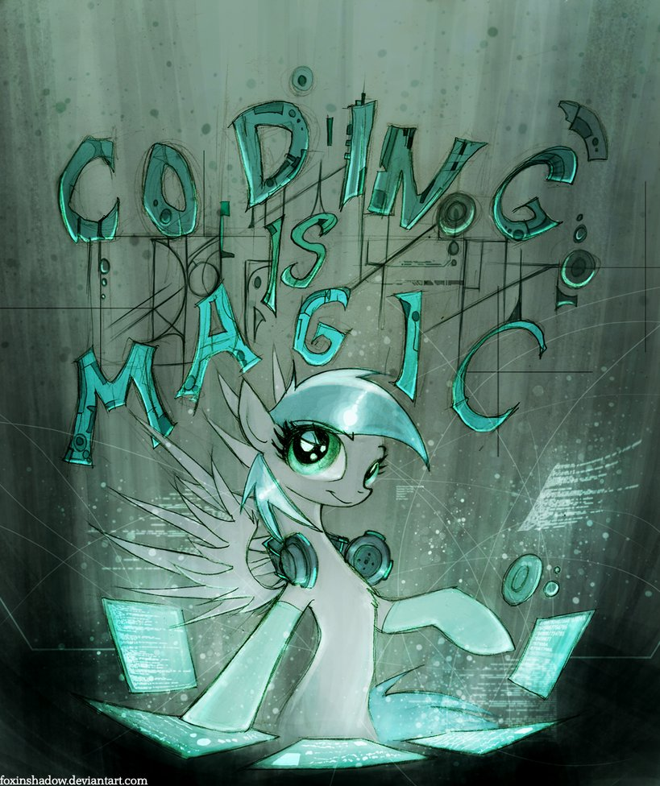

<h1>Кафедра комп'ютерних наук</h1>
//заснована 2010 року



0 Висококваліфіковані науково-педагогічні кадри
У 3складі кафедри комп’ютерних наук 18 викладачів, з яких 3 доктори, 9 кандидатів наук.
1 Засоби навчання
Навчальний процес забезпечений навчально-методичною літературою, засобами електронного навчання, комп’ютерним обладнанням. Заняття проводяться в 11 комп'ютерних класах, обладнаних доступом до мережі Інтернет.
2 Підготовка
На кафедрі здійснюється підготовка бакалаврів за напрямом 6.050101 – комп’ютерні науки, магістрів та спеціалістів за спеціальністю 8(7).05010105 – комп’ютерний еколого-економічний моніторинг.
3 Високий попит на сучасному ринку інформаційних технологій та послуг
Розробка та проектування інформаційних систем, вирішення проблем впровадження інформаційних технологій у виробничі умови, розробка моделей бізнес-процесів, формулювання вимог бізнесу до розроблюваного програмного забезпечення – це завдання, які вирішуються такими фахівцями.
4 Підготовка аналітиків комп’ютерних системи
Діяльність аналітика спрямована на пошук нових принципів організації підприємства та впровадження більш ефективних систем управління бізнес-процесами, формування нових методів управління екоресурсами та моніторингу стану навколишнього середовища.
У навчальному процесі використовується сучасне програмне забезпечення та прогресивні комп’ютерні технології. Дисципліни навчального процесу спрямовані на здобуття знань з:
комп’ютерного моделювання;
розробки баз даних та методів аналізу даних;
об’єктно-орієнтованого програмування, крос-платформного програмування та веб-програмування;
розробки геоінформаційних систем, систем аналітичної обробки даних та систем комп’ютерного моніторингу;
проектування інформаційних систем.
Наукова діяльність колективом кафедри ведеться у таких напрямах:
комп’ютерне моделювання складних систем в екології та економіці;
теорія і методи економічного аналізу систем;
методи дослідження екологічних систем;
розробка ефективних ІТ-проектів та програм комп’ютеризації виробництв;
створення прогресивних технологій аналізу даних;
проектування та розробка інформаційно-аналітичних систем;
проектування та розробка систем комп’ютерного моніторингу в екології та економіці.
В.о. зав. кафедри комп’ютерних наук, доктор технічних наук, доцент
Викладач кафедри комп’ютерних наук, кандидат фізико-математичних наук
Ст. викладач кафедри комп’ютерних наук, кандидат біологічних наук
Асистент кафедри комп’ютерних наук
Ст. викладач кафедри комп’ютерних наук, кандидат фізико-математичних наук
Асистент кафедри комп’ютерних наук
Ст. викладач кафедри комп’ютерних наук, кандидат фізико-математичних наук
Асистент кафедри комп’ютерних наук
Ст. викладач кафедри комп’ютерних наук, кандидат технічних наук (сумісник)
Ст. викладач кафедри комп’ютерних наук, кандидат технічних наук
Ст. викладач кафедри комп’ютерних наук, кандидат технічних наук
Асистент кафедри комп’ютерних наук